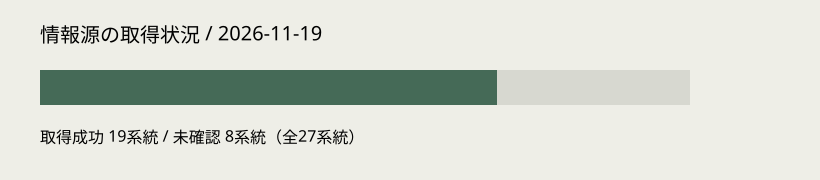

HW3 + HW4 · AUTOMATED SOURCE MONITOR
2026.11.19｜Tesla FSD・世界の自動運転とオーナーニュース
FSD・世界の自動運転・購入・充電などの27系統中、19系統を取得。取得できなかった情報も明示します。

Darin Caggiano / Wikimedia Commons · CC BY-SA 4.0 · 縮小版。表示枠に合わせたトリミングあり。
これは取得結果の日本語レポートです。海外見出しは未検証の報道案内。国内の解禁・在庫・開業を自動認定する記事ではありません。
今回検出した更新
Waymo日本 公式FAQ：出典内容の変更候補
ページの共通部分やPDF差し替えも含むため、制度・価格・機能の変更内容は未判定。最新の原文確認が必要です。
公式発表・海外報道への入口
初回取得時の見出しは既存の参考記事です。見出しの掲載順と公開日は原文で確認してください。過去記事の再配信もあり得ます。
- 世界の自動運転／未検証 · 新規検出日産が選んだイギリスの自動運転AI「Wayve」に乗ってみた。東京の細い路地も器用にすり抜ける - Business Insider Japan世界の自動運転報道の発見用RSS / 原文公開日 Wed, 18 Nov 2026 21:45:00 GMT
- 世界の自動運転／未検証 · 新規検出Waymoのロボタクシー、全都市で高速道路から撤退 工事区間への進入で - Martin Cid Magazine世界の自動運転報道の発見用RSS / 原文公開日 Wed, 18 Nov 2026 07:12:32 GMT
- 世界の自動運転／未検証 · 新規検出Waymoがロボタクシーの高速道路利用を全米で中止、カリフォルニア州で複数の衝突事故を受けて出された使用中止命令を受け - GIGAZINE世界の自動運転報道の発見用RSS / 原文公開日 Thu, 19 Nov 2026 02:54:16 GMT
- 世界の自動運転／未検証 · 新規検出Mobile Robots in Industry: Market Readiness, ROI, and 20-Year Outlook - IDTechEx世界の自動運転報道の発見用RSS / 原文公開日 Wed, 18 Nov 2026 10:42:18 GMT
- 海外報道・未検証 · 新規検出South Korean Police Are Cracking Down On Tesla Owners Jailbreaking FSD - InsideEVs世界FSD報道の発見用RSS / 原文公開日 Wed, 18 Nov 2026 17:21:08 GMT
- 海外報道・未検証 · 新規検出Tesla toughens FSD driver monitoring in Europe while loosening it in the US - Electrek世界FSD報道の発見用RSS / 原文公開日 Wed, 18 Nov 2026 18:33:00 GMT
- 海外報道・未検証 · 新規検出Tesla update 2026.44.1 goes wide release with FSD v14.3 Lite (HW3), FSD v14.3.13 (HW4) and Charger …世界FSD報道の発見用RSS / 原文公開日 Wed, 18 Nov 2026 20:05:21 GMT
- 海外報道・未検証 · 新規検出Tesla FSD Files Withheld by Bulgaria After France Demanded Confidentiality - Electric Vehicles世界FSD報道の発見用RSS / 原文公開日 Wed, 18 Nov 2026 15:49:00 GMT
- 規制当局・原文確認 · 新規検出Vehicle Detail Search - 2026 TESLA ROBOTAXI - NHTSA | National Highway Traffic Safety Administratio…規制当局の関連発表（RSS発見） / 原文公開日 Wed, 04 Nov 2026 14:58:05 GMT
- 規制当局・原文確認 · 新規検出Consumer Alert: July is National Vehicle Theft Prevention Month - NHTSA | National Highway Traffic …規制当局の関連発表（RSS発見） / 原文公開日 Tue, 06 Jul 2021 14:25:23 GMT
- 規制当局・原文確認 · 新規検出Part 573 Safety Recall Report 26V698 - NHTSA | National Highway Traffic Safety Administration (.gov)規制当局の関連発表（RSS発見） / 原文公開日 Fri, 23 Oct 2026 07:00:00 GMT
- 補助金・期限 · 新規検出令和７年度補正 CEV 補助金（車両） コールセンターへの問合せについてのお願いCEV補助金：実施機関のお知らせ / 原文公開日 原文で確認
- 補助金・期限 · 新規検出＜重要＞ 令和７年度補正 CEV 補助金（車両） 予算残高・申請受付終了見込み時期と注意点についてCEV補助金：実施機関のお知らせ / 原文公開日 原文で確認
- 購入・補助金／未検証 · 新規検出国のEV補助金、11月内で終了へ、経産省「申請殺到」で前倒し［新聞ウォッチ］（レスポンス） - Yahoo!ニュース日本のTesla購入・補助金の報道発見 / 原文公開日 Tue, 17 Nov 2026 23:18:36 GMT
- 購入・補助金／未検証 · 新規検出門戸開放迫るテスラ、外資警戒論広がる日本 成長逃す「ナマズ狩り」に陥るな - 日経ビジネス電子版日本のTesla購入・補助金の報道発見 / 原文公開日 Wed, 18 Nov 2026 15:00:00 GMT
- 購入・補助金／未検証 · 新規検出テスラ家庭用蓄電池 Powerwall 3、SMART GRID EXPO【関西】2026に出展 - 福島民友新聞社日本のTesla購入・補助金の報道発見 / 原文公開日 Tue, 17 Nov 2026 08:10:00 GMT
- 購入・補助金／未検証 · 新規検出テスラ、ギガベルリンに30億ユーロ投資へ。サイバーキャブを年間最大100万台生産 - EVcafe日本のTesla購入・補助金の報道発見 / 原文公開日 Tue, 17 Nov 2026 02:39:15 GMT
- アップデート／未検証 · 新規検出Tesla、欧州でFSDの運転者監視強化 米国と規制対応に差 - 디지털투데이Teslaアップデートの報道発見 / 原文公開日 Thu, 19 Nov 2026 01:40:58 GMT
日本のオーナーへの確認ポイント
HW3・HW4とも、海外の提供開始・価格・バージョンを国内条件へ直接適用しないでください。在庫は公式商品画面、新しい充電拠点は公式詳細と車内地図を確認します。国内の開始時期を推定できる新たな根拠は、この定型レポートでは認定していません。
購入前・オーナー向け：今日の確認ポイント
購入特典は対象車・期限・残枠、補助金は登録日別の額・申請期限・予算終了見込みを分けて確認。FSDはHWと契約、アップデートは日本向け配信条件を確認します。アクセサリーは車両世代・実寸・国内販売条件を照合します。
本日のモデル別・年式別中古相場
元データ：カーセンサーの公開相場表。価格帯ごとの分布から中央値の所属範囲を求めたものです。グレード・距離・修復歴の構成をそろえた指数ではありません。
カーセンサー Model 3 掲載価格相場
取得 2026-11-19T13:01:30+09:00 / 掲載 188台。出典：掲載価格分布 ↗
| 登録年の区分 | 掲載台数 | 中央値が属する範囲（本体価格） | 注意 |
|---|---|---|---|
| 2019年 | 14台 | 160万円以上〜200万円未満 | 掲載価格・成約価格ではない |
| 2020年 | 16台 | 200万円以上〜220万円未満 | 掲載価格・成約価格ではない |
| 2021年 | 69台 | 220万円以上〜240万円未満 | 掲載価格・成約価格ではない |
| 2022年 | 57台 | 260万円以上〜280万円未満 | 掲載価格・成約価格ではない |
| 2023年 | 11台 | 300万円以上〜320万円未満 | 掲載価格・成約価格ではない |
| 2024年 | 14台 | 380万円以上〜400万円未満 | 掲載価格・成約価格ではない |
| 2025年 | 6台 | 380万円以上〜420万円未満 | 少数標本（10台未満） |
国内導入前の年式区分 1台を表から除外。入力誤りや並行輸入を自動判定していません。
カーセンサー Model Y 掲載価格相場
取得 2026-11-19T13:01:30+09:00 / 掲載 142台。出典：掲載価格分布 ↗
| 登録年の区分 | 掲載台数 | 中央値が属する範囲（本体価格） | 注意 |
|---|---|---|---|
| 2022年 | 53台 | 270万円以上〜290万円未満 | 掲載価格・成約価格ではない |
| 2023年 | 44台 | 290万円以上〜330万円未満 | 掲載価格・成約価格ではない |
| 2024年 | 14台 | 370万円以上〜390万円未満 | 掲載価格・成約価格ではない |
| 2025年 | 25台 | 510万円以上〜530万円未満 | 掲載価格・成約価格ではない |
| 2026年以降 | 6台 | 510万円以上〜570万円未満 | 少数標本（10台未満） |
カーセンサー Model S 掲載価格相場
取得 2026-11-19T13:01:30+09:00 / 掲載 26台。出典：掲載価格分布 ↗
| 登録年の区分 | 掲載台数 | 中央値が属する範囲（本体価格） | 注意 |
|---|---|---|---|
| 2014年 | 2台 | 0万円以上〜180万円未満 | 少数標本（10台未満） |
| 2015年 | 2台 | 300万円以上〜460万円未満 | 少数標本（10台未満） |
| 2016年 | 4台 | 180万円以上〜240万円未満 | 少数標本（10台未満） |
| 2017年 | 3台 | 320万円以上〜340万円未満 | 少数標本（10台未満） |
| 2018年 | 5台 | 320万円以上〜340万円未満 | 少数標本（10台未満） |
| 2019年 | 1台 | 240万円以上〜260万円未満 | 少数標本（10台未満） |
| 2020年 | 5台 | 420万円以上〜440万円未満 | 少数標本（10台未満） |
| 2021年 | 1台 | 560万円以上〜580万円未満 | 少数標本（10台未満） |
| 2023年 | 3台 | 860万円以上〜880万円未満 | 少数標本（10台未満） |
カーセンサー Model X 掲載価格相場
取得 2026-11-19T13:01:30+09:00 / 掲載 40台。出典：掲載価格分布 ↗
| 登録年の区分 | 掲載台数 | 中央値が属する範囲（本体価格） | 注意 |
|---|---|---|---|
| 2017年 | 13台 | 370万円以上〜390万円未満 | 掲載価格・成約価格ではない |
| 2018年 | 8台 | 450万円以上〜470万円未満 | 少数標本（10台未満） |
| 2019年 | 4台 | 390万円以上〜550万円未満 | 少数標本（10台未満） |
| 2020年 | 10台 | 530万円以上〜570万円未満 | 掲載価格・成約価格ではない |
| 2021年 | 1台 | 690万円以上〜710万円未満 | 少数標本（10台未満） |
| 2023年 | 4台 | 1030万円以上〜1110万円未満 | 少数標本（10台未満） |
この日の取得状況

| 情報源 | 状態 | 確認時刻 |
|---|---|---|
| 世界の自動運転報道の発見用RSS | 取得成功 | 2026-11-19T13:01:30+09:00 |
| 国交省 車両安全対策検討会 | 取得成功 | 2026-11-19T13:01:30+09:00 |
| Waymo日本 公式FAQ | 取得成功 | 2026-11-19T13:01:30+09:00 |
| 日産 次世代ProPILOT 公式 | 取得成功 | 2026-11-19T13:01:30+09:00 |
| Tesla Japan 公式発表 | 取得成功 | 2026-11-19T13:01:30+09:00 |
| 世界FSD報道の発見用RSS | 取得成功 | 2026-11-19T13:01:30+09:00 |
| FSD 世界提供地域（Tesla公式） | 未確認 / アクセス制限により自動取得できません | 2026-11-19T13:01:30+09:00 |
| FSD 米国価格・機能（Tesla公式） | 未確認 / アクセス制限により自動取得できません | 2026-11-19T13:01:30+09:00 |
| オランダRDW：FSD承認の公式説明 | 取得成功 | 2026-11-19T13:01:30+09:00 |
| 規制当局の関連発表（RSS発見） | 取得成功 | 2026-11-19T13:01:30+09:00 |
| 米国NHTSA TeslaリコールAPI / Model Y 2026 | 取得成功 | 2026-11-19T13:01:30+09:00 |
| 日本Supercharger公式一覧 | 未確認 / アクセス制限により自動取得できません | 2026-11-19T13:01:30+09:00 |
| モバイルコネクター公式商品 | 未確認 / アクセス制限により自動取得できません | 2026-11-19T13:01:30+09:00 |
| ウォールコネクター公式商品 | 未確認 / アクセス制限により自動取得できません | 2026-11-19T13:01:30+09:00 |
| CHAdeMO公式商品（URL存続も確認） | 未確認 / アクセス制限により自動取得できません | 2026-11-19T13:01:30+09:00 |
| 日本公式ショップ充電カテゴリ | 未確認 / アクセス制限により自動取得できません | 2026-11-19T13:01:30+09:00 |
| CEV公式：登録日別・車両別の補助額PDF | 取得成功 | 2026-11-19T13:01:30+09:00 |
| CEV補助金：実施機関のお知らせ | 取得成功 | 2026-11-19T13:01:30+09:00 |
| Tesla日本：現在の購入特典 | 未確認 / アクセス制限により自動取得できません | 2026-11-19T13:01:30+09:00 |
| Spigen公式 Teslaアクセサリー | 取得成功 | 2026-11-19T13:01:30+09:00 |
| 日本のTesla購入・補助金の報道発見 | 取得成功 | 2026-11-19T13:01:30+09:00 |
| Teslaアップデートの報道発見 | 取得成功 | 2026-11-19T13:01:30+09:00 |
| Tesla用アクセサリー新着の発見 | 取得成功 | 2026-11-19T13:01:30+09:00 |
| カーセンサー Model 3 掲載価格相場 | 取得成功 | 2026-11-19T13:01:30+09:00 |
| カーセンサー Model Y 掲載価格相場 | 取得成功 | 2026-11-19T13:01:30+09:00 |
| カーセンサー Model S 掲載価格相場 | 取得成功 | 2026-11-19T13:01:30+09:00 |
| カーセンサー Model X 掲載価格相場 | 取得成功 | 2026-11-19T13:01:30+09:00 |

Nashucks / Wikimedia Commons · CC0 · 縮小版。表示枠に合わせたトリミングあり。

Vauxford / Wikimedia Commons · CC BY-SA 4.0 · 縮小版。表示枠に合わせたトリミングあり。